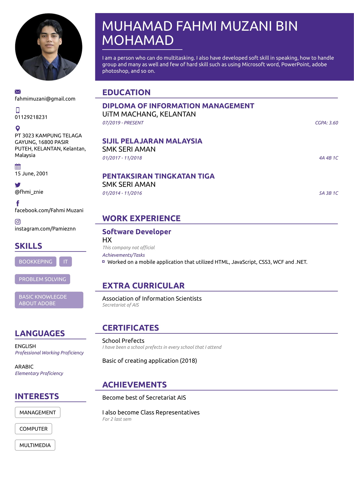
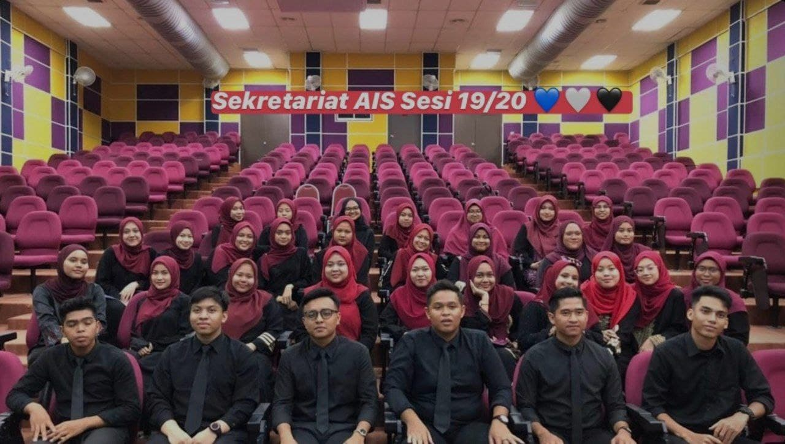
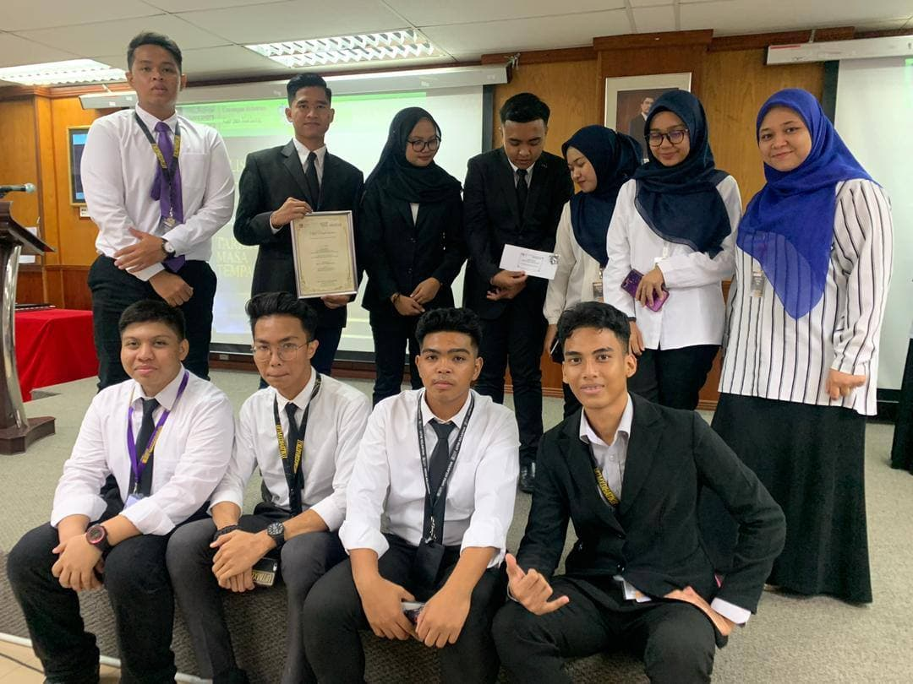

| UiTM Puncak Perdana | 2022-2024 |
| UiTM Kelantan | 2019-2022 |
| Smk Seri Aman | 2014-2018 |
| Sk Kamil 1 | 2011-2013 |
| Sk Sri Kelewek | 2007-2010 |


I used to be the Secretariat in the AIS club (Association of Information Scientists) in 2019-2020. Throughout my time as a secretariat, there has been a wealth of knowledge and experience that has made me a responsible, disciplined, and punctual person

I was also part of the members who organized the debate program in 2019. At that time, I used to be the protocol bureau where I had to accompany the Rector of UiTM Kelantan Branch to the place where the program took place.